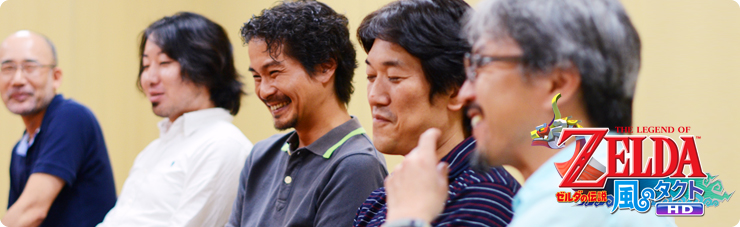
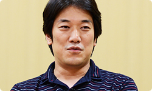
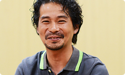
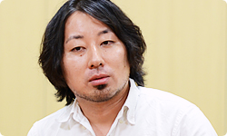
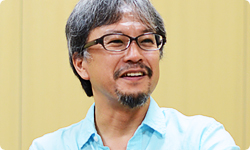
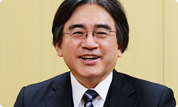

<div class="l-category-local-header">
<div class="category-local-header">
<div class="category-local-heading"><span>社長が訊く</span>
<div class="category-local-sub">IWATA ASKS


<div class="l-soft-topic-path is-block">
<div class="l-soft-topic-path-inner">
<div class="soft-topic-path">
<ul class="topic-path"><li class="topic-path-item"><span>ゼルダの伝説 風のタクト ＨＤ</span></li></ul>


<div id="page-container">
<header class="interviewheader">
<h2 class="interviewheader__ttl"><span class="subtext">社長が訊く</span>『ゼルダの伝説 風のタクト ＨＤ』</h2>

</header>
<div class="hero-container">
<div class="hero__img">


<div class="pageindex-container">
<p class="pageindex__ttl">目次
<ul class="pageindex__body">
<li class="pageindex__item">1. “ネコ目リンク”はいかに生まれたか</li>
<li class="pageindex__item">2. ゼルダ・サイクル</li>
<li class="pageindex__item">3. 「序盤は神。だけど後半は・・・」</li>
<li class="pageindex__item">4. 考古学</li>
<li class="pageindex__item">5. オーバースペック</li>
<li class="pageindex__item active">6. まっすぐなエンターテインメント</li>
</ul>

<div class="interview-container">
<h3 class="interview__ttl">6. まっすぐなエンターテインメント</h3>

岩田
: さて、そろそろまとめとなりますが、<br>最後にみなさんから<br>オリジナル版『風のタクト』を遊んだことのある人と、<br>まだ遊んだことのない人それぞれに、<br>メッセージをお願いします。<br>青沼さんは最後ですね。岩本さんから。


岩本
: 僕は今回のリメイクにあたって<br>調整をいろいろ新たに入れさせてもらったので、<br>『風のタクト』を遊んだことがある方には<br>そのちがいを実感してもらえるとうれしいですね。<br>わかりやすいところでいうと、<br>船のスピードが２倍になっていたり、<br>Wii U GamePadで使いやすくなったＵＩ（※22）は、<br>とくにマップを手元に出せるので、<br>世界がより快適に楽しめるようになっています。<br>新しくMiiverse（※23）にも対応しましたので、<br>そこもぜひ体験してほしいですね。





※22ＵＩ＝ユーザー・インターフェイスの略称。コンピューターを操作するときの画面表示、ウィンドウ、メニューなどの表現や操作感を指す。
※23>Miiverse＝Miiを通じて世界中の人たちがつながる、Wii Uにシステムレベルで統合された、ゲームをもっと楽しむためのネットワークサービス。好きなゲームソフトの広場で感想を述べあったり、手描きの絵やコメントを書き込んだりしながら交流できる。


岩田
: はい。遊んだことのない方には？


岩本
: もう純粋に、この世界に<br>飛び込んできてもらいたいですね。<br>遊んでいる最中は歯ごたえある場面も<br>少なからずあるんですけど、<br>それを乗り越え最後まで遊んでもらえたら<br>「ああ～、おもしろかった！」<br>と感じてもらえるものになったと思います。


青沼
: 今回、岩本さんはある意味<br>いちばんお客さんに近い目線で<br>かかわってもらいましたから、<br>そう言われると説得力ありますね。


岩田
: 滝澤さんはどうですか？


滝澤
: まず、遊んだことのある方には、<br>「新しく世界をつくり直しました」<br>と言っていいくらい、<br>印象が変わったことは伝えたいですね。




岩田
: 「あなたの記憶に勝ってみせます」<br>ということですね（笑）。


滝澤
: ぜひ、勝負させてほしいですね。<br>ライティングなどもぜんぶいちから<br>入れ直していますので、<br>新しく生まれ変わった世界を、<br>新鮮な気持ちで楽しんでもらえると思っています。<br>それから、まだ遊ばれたことのない方は<br>『風のタクト』と聞いて、<br>「１０年以上前の昔のゲームでしょ？」<br>と思われるかもしれませんが、<br>古さを感じさせることのない、<br>ほかに類を見ない魅力が詰まったゲームですと<br>お伝えしたいです。


岩田
: そうですね。ほかにないですね。


滝澤
: それから、アニメーションについては、<br>じつはほとんど修正を入れてないんですが、<br>「オリジナル当時のままで<br>　いちばん見ていて気持ちのいい『ゼルダ』」<br>と言っても過言ではないと思ってるからなんです。<br>ご家族や友達みなさん一緒に、<br>リビングの大画面テレビで<br>楽しんでいただけたら幸いです。


岩田
: はい。では堂田さん。<br>まず遊んだことのある方に。


堂田
: さっき話にも出たんですけど、<br>ゲームキューブの時、表現しきれなかった<br>クリエイティブというのがあって、<br>そのつくり手の怨念みたいなものは<br>今回ＨＤで表現できたと思っています。




岩田
: 怨念、とまで言いますか？ 情熱ではなく（笑）。


滝澤
: でもその言いかたが、いちばんしっくりきますね。


岩田
: 「成仏してなかった」ということですかね。


一同
: ああー（笑）。


堂田
: でも本当に、誰もわからないだろうに<br>「こんなところまでつくってたのか」<br>みたいな部分がいくつもあったんですね。<br>そこを今回あますことなく掘り起こしたので、<br>ぜひ味わってもらえたら。


岩田
: はい。遊んだことのない方には？


堂田
: 自分がつくり手になってあらためて感じたのは<br>「『風のタクト』ってまっすぐなゲームだなぁ」<br>ということなんです。<br>ゲームの方向性自体もそうですし、ストーリーも<br>ぜんぶまっすぐで、ブレがないんです。<br>この“まっすぐなエンターテインメント”を<br>存分に楽しんでもらいたいですね。


岩田
: 「まっすぐなエンターテインメント」って、<br>このゲームの本質をまさに言い表していますよね。


堂田
: それをはじめて楽しめる人は、<br>ある意味とてもラッキーなことだと思います。


岩田
: 有本さん、どうぞ。<br>以前遊んだ方には何と？


有本
: 気づかなかった発見が、あると思います。<br>具体的なところでいうと、<br>最初の島にいる<span>赤シャチと青ジイの兄弟（※24）</span>は、<br>一見似ても似つかないふたりなんですけど、<br>ＨＤで見ると青ジイは<br>メガネの奥の眼光が鋭いんですよ。<br>つくってる自分たちもそれを見て、<br>「ああ、このふたりやっぱり兄弟なんだ～」って<br>あらためて実感するようなことがありますね。


※24赤シャチと青ジイの兄弟＝最初の舞台となるプロロ島の住人。リンクに剣術やさまざまな操作を指南してくれる。


岩田
: ＨＤになったことで、眼光鋭いふたりの共通点が<br>明らかになったわけですね（笑）。


有本
: はい、ほかにもあると思います（笑）。<br>あと僕は常々、遊んだことのない方の中には、<br>「『風のタクト』のリンクはかわいいだけ」と<br>誤解されてる方がいらっしゃるんじゃないかと<br>思っているんです。<br>でも、見かけこそかわいいですけど、<br>その行動はいつも男前でカッコいいんですよ。


滝澤
: たしかに、ゲーム中でやっていることや<br>なし遂げることを見たら<br>『ゼルダ』史上もっとも男前なリンクです。


有本
: 媚びてかわいい表情やポーズを<br>見せることはないですから。


岩本
: でも、ハートの器をとったとき<br>ものすごく無邪気にはしゃぎますよね。


有本
: あっ・・・（笑）。


岩本
: あれ、かわいいですよね。


一同
: （笑）


岩田
: まあ、ほかがぜんぶカッコいいから<br>あのしぐさが映えるというのはありますね。<br>最後に、青沼さん。締めの言葉を。


青沼
: さっき「まっすぐ」って言葉がありましたけど、<br>たしかにもともとのオリジナル版は、<br>一枚のネコ目リンクの画から、<br>いろんなことがスパッと一気に決まって<br>つくられたゲームだったとは思います。<br>本当に一気に、全力で駆け抜けるように<br>つくりあげたゲームでした。<br>けれど、それを遊んでみると<br>もたつくところもいっぱい見えてきたわけですね。<br>今回はそういった部分を一新して、<br>さらにそこにＨＤの表現力が相まって、<br>シャキッと磨かれた新たな“キレ”みたいなものが<br>加わった気がしています。




岩田
: はい。


青沼
: オリジナル版を遊んでもらえた人には、<br>絶対そのちがいがわかってもらえると思いますし、<br>「こういうことだったんだ」っていう手ごたえが<br>前よりも増してるっていう感覚は、<br>絶対味わってもらえると思うんです。<br>今回はより遊びやすく、<br>快適に進められるように手を加えてあるので、<br>本当にこの世界をすみずみまで<br>遊び尽くす喜びを、<br>味わってもらえるんじゃないかと思います。


岩田
: 以前より<br>「世界を遊び尽くしやすくなりました」と。


青沼
: はい。で、はじめて遊ぶ方にはですね、<br>今回の『風のタクト』は、けっしてリメイクではなく<br>いまの時代に生まれ変わるべくして誕生した<br>新しい『ゼルダ』だと思っていただいて、<br>まちがいありません。


岩田
: ２０１３年のいま提案する、<br>まっすぐで骨太な『ゼルダ』ですね。


青沼
: はい。そこを存分に、<br>味わってもらいたいですね。


岩田
: わたし自身は、今回リファインした<br>数々の要素というのは、<br>全方位のいろんな人に対して<br>手がさしのべられている感じがしています。<br>それらがお客さんの手に届いたときに、<br>どんなふうに受け止めてもらえるのか、楽しみです。


青沼
: そういう意味では、この『風のタクト ＨＤ』が、<br>どういう評価を受けるのか見届けたいですね。<br>僕らがオリジナル版で目指したことと、<br>そこに載せた思いが正しかったのかどうか。<br>これからの『ゼルダ』を考えていく、<br>重要なターニングポイントになってくると思います。


岩田
: あとはやっぱり、<br>『風のタクト ＨＤ』はそばで見てる人も<br>楽しくなるゲームだと思います。<br>いいゲームのひとつの条件に、<br>「まわりで見ている人も楽しい」ことが<br>挙げられると思うんですけど、<br>『風のタクト ＨＤ』はその力が<br>とくに大きいと思うんですね。<br><br>今回のＨＤ化によってますます、<br>画の力、表情の力、世界の力がひとつになって<br>本来は見えない光や風、ぬくもりが<br>感じられるゲームになったと思います。<br>ぜひ家族や友達同士で、できるだけ大画面で<br>一緒に楽しんでもらいたいですね。<br>今日はありがとうございました。




一同
: ありがとうございました。


<li class="pagination-prev"><span>5. オーバースペック</span></li>
</ul>
<div class="listbtn-container">
<p class="listbtn__item">社長が訊く 一覧

